Como cadastrar viagens e tours, montar a lista de passageiros, escalar guias, conferir relatórios e notas fiscais e registrar pagamentos.
Acesse em sistema.645turismo.com.br/adminVersão de outubro de 2026
Manual do ADM
CONTEÚDOO que você encontra aqui
O capítulo 2 resume o caminho de uma viagem do cadastro ao pagamento. Os demais detalham cada tela.
01Acesso e perfis
02O caminho de uma viagem
03Tela Hoje
04Cadastrar uma viagem/tour
05Copiar uma viagem
06Página da viagem e publicação
07Dias de trabalho e vagas
08Escalar guias
09Lista de passageiros
10Importar a planilha
11Guias: triagem e ficha
12Pré-cadastro em massa
13Conferência
14Pagamentos
15Atendimento e recados
16Conteúdo, Funções e Equipe
Manual do ADM
CAPÍTULO 01Acesso e perfis
O Painel ADM fica em sistema.645turismo.com.br/admin. Cada pessoa entra com o próprio e-mail e senha.
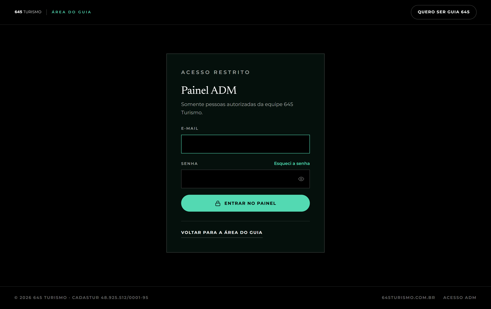
Entrada do Painel ADM
Esqueceu a senha? Use "Esqueci a senha": o link chega no e-mail cadastrado. Novas pessoas da equipe recebem um convite por e-mail para criar a senha (capítulo 16).
Perfil
O que acessa
Administrador
Tudo, inclusive a tela Equipe (quem acessa o painel)
Coordenador
Viagens, passageiros, escala, guias, pré-cadastro, funções, conteúdo, conferência e atendimento
Financeiro
Conferência de relatórios e notas, pagamentos e atendimento
PrivacidadeOs guias só veem os próprios dados. Documentos, notas e comprovantes abrem por links únicos, que não podem ser adivinhados.
Manual do ADM
CAPÍTULO 02O caminho de uma viagem
Toda viagem ou tour segue a mesma ordem. A página da viagem mostra cada etapa com um ✓ quando está pronta.
1Cadastrar2Dias de trabalho3Vagas por função4Passageiros5Publicar
6Escalar guias7Acompanhar no dia8Conferir relatório e NF9Pagar10Concluir
Etapa
Quem faz e onde
1 a 5
Coordenação, em Viagens/Tours (capítulos 4 a 10)
6 Escalar
Coordenação convida ou aloca guias; o guia aceita pela Área do Guia
7 No dia
Guia faz check-in, check-out e no-show; a equipe acompanha ao vivo na lista
8 Conferir
Guia envia relatório e nota fiscal; coordenação ou financeiro aprovam em Conferência
9 Pagar
Financeiro registra o pagamento com comprovante em Pagamentos
10 Concluir
Coordenação marca a viagem como concluída
Rascunho primeiroViagem nova nasce como rascunho: nenhum guia vê até você publicar. Assim dá para montar tudo com calma.
Manual do ADM
CAPÍTULO 03Tela Hoje
A primeira tela depois de entrar mostra o que precisa de atenção agora.
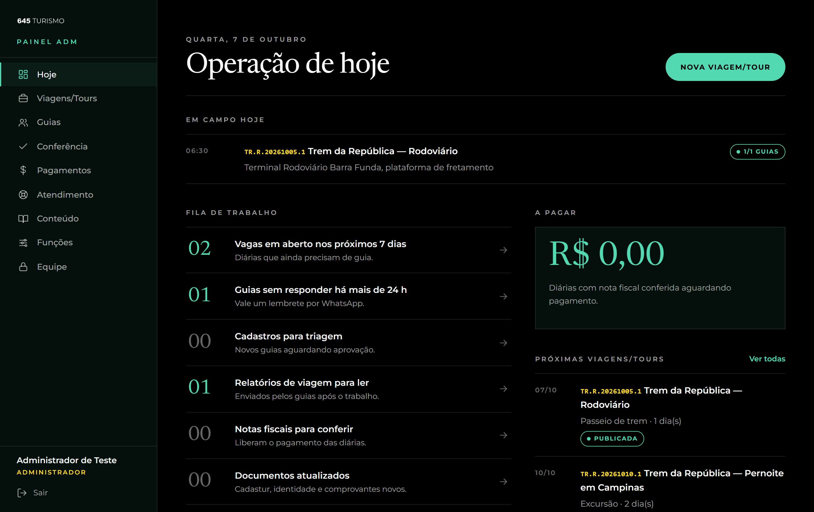
Operação de hoje
Em campo hoje: viagens com trabalho no dia e o andamento dos guias.
Fila de trabalho: vagas em aberto nos próximos 7 dias, guias sem responder há mais de 24 h, cadastros para triagem, relatórios e notas a conferir. Clique na linha para resolver.
A pagar: total de diárias com nota conferida, aguardando pagamento.
Próximas viagens/tours e o botão Nova viagem/tour.
Manual do ADM
CAPÍTULO 04Cadastrar uma viagem/tour
Em Viagens/Tours, clique em Nova viagem/tour. A lista mostra as viagens com filtros por situação e busca por código, nome ou cliente.
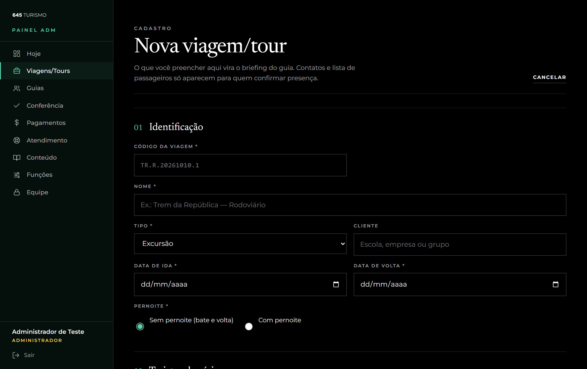
Identificação da nova viagem
Campos do cadastro
Bloco
O que preencher
Identificação
Código definido pela equipe, em texto livre (ex.: TR.R.20261010.1), que não pode repetir; nome, tipo, cliente, datas de ida e volta, com ou sem pernoite e hospedagem
Trajeto e horários
Origens (pontos de embarque, cada uma com horário opcional; use + Adicionar origem para mais), destino, ponto de encontro, link do mapa e os horários de apresentação, saída, saída do destino e chegada prevista
Veículo
Escolha na lista: Micro-ônibus 26, Ônibus Padrão 46 ou 50, Ônibus DD 64 ou Outro (descreva e informe os lugares). Informe as poltronas bloqueadas (ex.: 1, 2, 45-46). O mapa do carro é gerado disso
Equipe e contatos
Coordenação, motorista, guia local e outros contatos com telefone
Briefing
Perfil e idioma do grupo, uniforme, alimentação, roteiro, regras e observações
Nota fiscal
Prazos para enviar a nota e para pagar, e instruções da nota
Dias de trabalho
Deixe marcado "Criar um dia de trabalho para cada data" para gerar os dias automaticamente
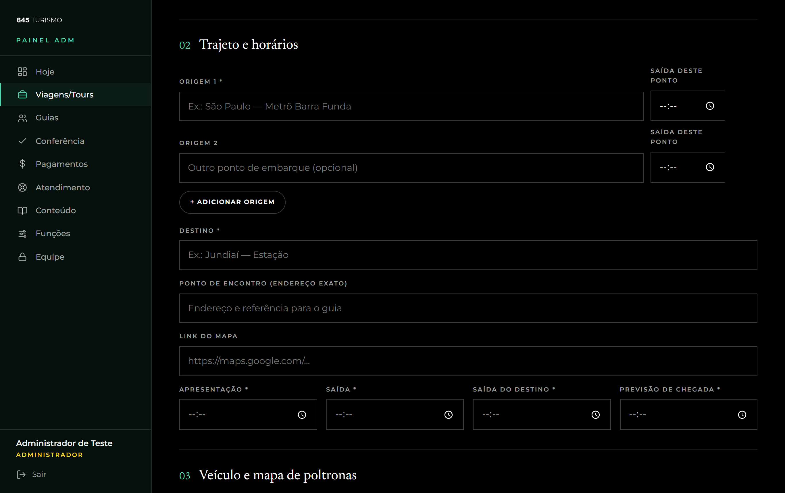
Origens e horários
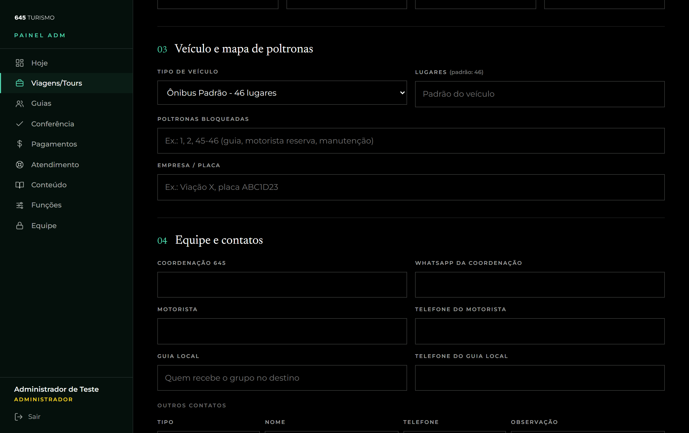
Veículo, poltronas e contatos
Clique em Criar como rascunho. Você vai para a página da viagem (capítulo 6).
Manual do ADM
CAPÍTULO 05Copiar uma viagem
Para viagens que se repetem, copie uma existente e mude só o que for diferente.
Abra a viagem que servirá de modelo e clique em Copiar viagem.
O cadastro abre preenchido com os dados, origens e contatos. Informe o novo código e as novas datas.
Deixe marcado "Copiar as vagas por função e o valor da diária" se elas forem iguais.
Clique em Criar como rascunho.
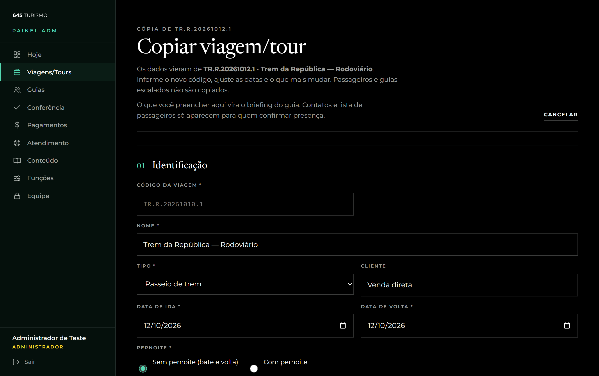
Cadastro aberto a partir de uma cópia
O que não é copiadoPassageiros e guias escalados ficam de fora: cada viagem tem a sua lista e a sua escala.
Manual do ADM
CAPÍTULO 06Página da viagem e publicação
Tudo sobre uma viagem fica numa página: etapas, horários, briefing, passageiros, dias, vagas, escala e relatórios.
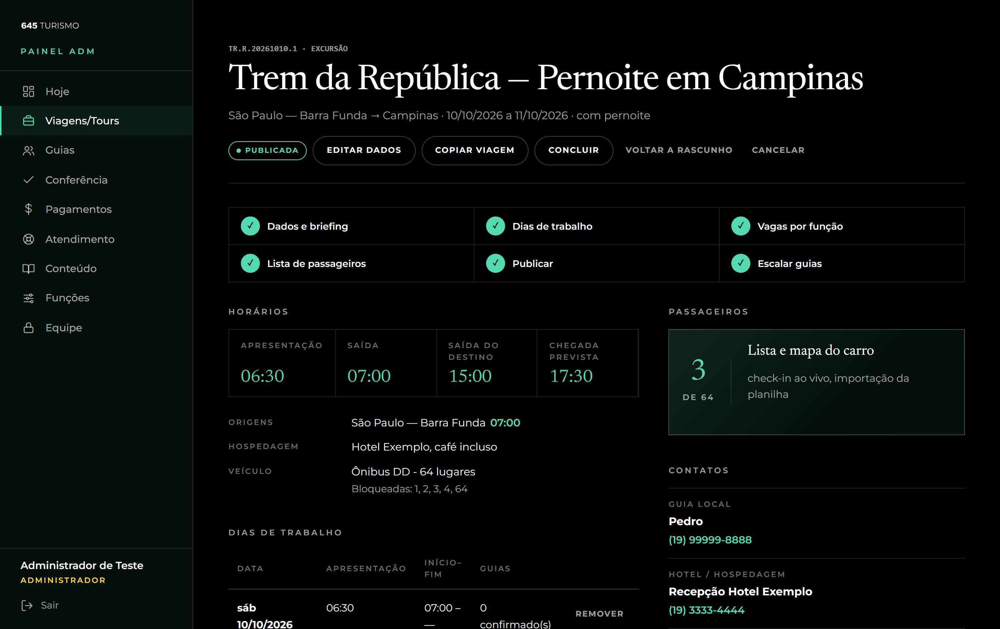
Página de uma viagem publicada
Botões do topo
Botão
O que faz
Editar dados
Altera o cadastro (horários, veículo, origens, contatos)
Copiar viagem
Cria outra viagem a partir desta (capítulo 5)
Publicar
Os guias passam a ver a viagem e você pode convidar
Voltar a rascunho
Esconde dos guias até publicar de novo
Concluir
Marca a viagem como encerrada
Cancelar
Cancela a viagem e todos os convites e confirmações
Manual do ADM
CAPÍTULO 07Dias de trabalho e vagas
Os dias de trabalho dizem quando os guias trabalham. As vagas dizem quantos guias de cada função e quanto cada um ganha por diária.
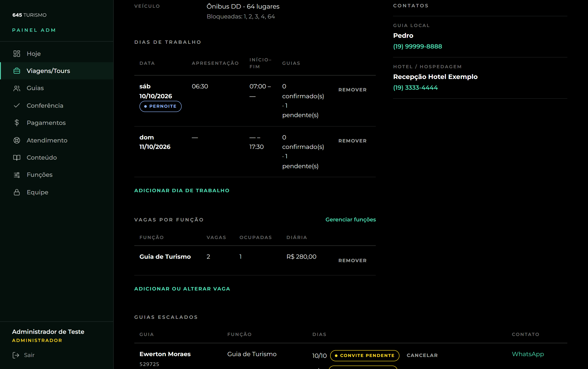
Dias de trabalho e vagas por função
Adicionar dia de trabalho: data, horário de apresentação, início, fim, pernoite e observação. Use Remover para tirar um dia.
Adicionar ou alterar vaga: escolha a função, a quantidade de vagas e o valor da diária. A tabela mostra vagas e ocupadas.
Valor da diáriaO guia recebe o valor no e-mail do convite e, depois de aceitar, vê em Ganhos. Ele não aparece nas telas de vagas e convites da Área do Guia.
Manual do ADM
CAPÍTULO 08Escalar guias
Com a viagem publicada, escolha os guias na seção Guias escalados da página da viagem.
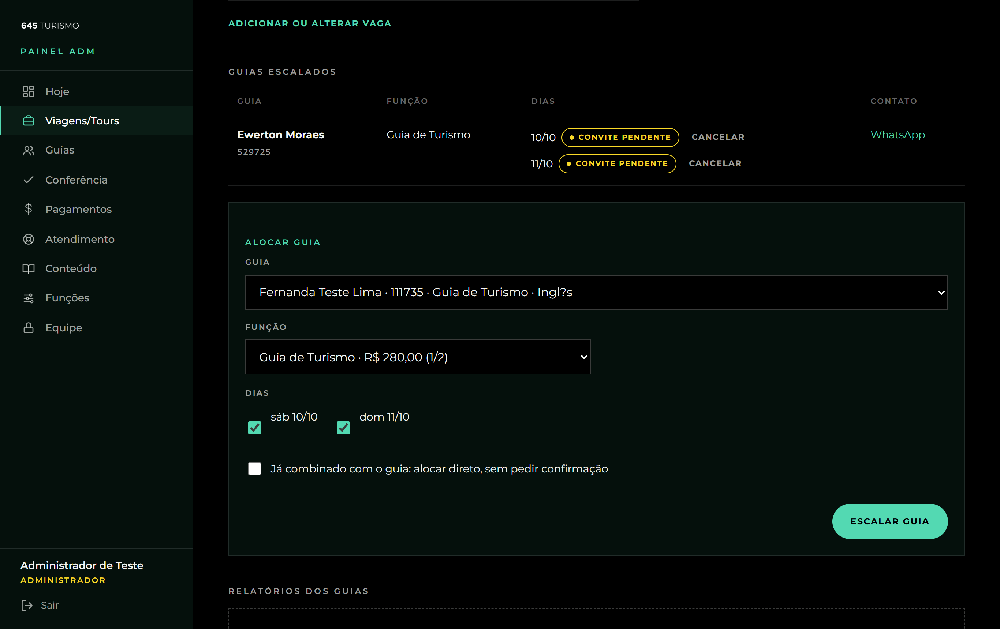
Alocar guia
Em Guia, escolha a pessoa. A lista mostra a situação de cada um nos dias da viagem: disponível, sem marcação, indisponível ou já escalado em outra viagem no mesmo dia.
Escolha a função (vaga) e marque os dias.
Clique em Escalar guia. O guia recebe um convite por e-mail e precisa aceitar.
Já combinou com o guia? Marque "Já combinado com o guia: alocar direto". Ele entra confirmado, sem precisar aceitar, e recebe um e-mail avisando.
A tabela mostra cada guia com a situação do convite e o WhatsApp para contato. Use Cancelar para tirar alguém antes do trabalho; o guia é avisado por e-mail.
Manual do ADM
CAPÍTULO 09Lista de passageiros
A lista fica nas colunas da planilha da 645 e se atualiza ao vivo. No dia, você acompanha os check-ins feitos pelos guias.
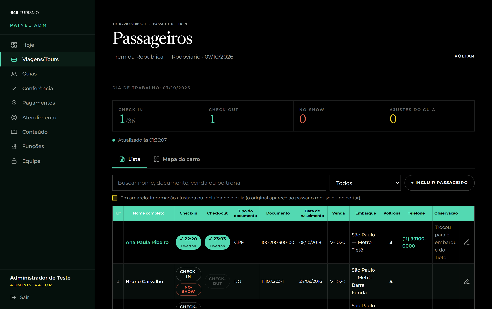
Lista de passageiros no Painel ADM
Ação
Como
Incluir passageiro
+ Incluir passageiro: nome, documento, nascimento, venda (reserva), embarque, poltrona, telefone, observação e tipo de passageiro
Editar ou remover
Ícone de lápis na linha; no formulário há Remover da lista
Ajustes do guia
Aparecem em amarelo (o original aparece ao passar o mouse). Use Incorporar ajustes do guia para torná-los oficiais
Check-in, check-out e no-show
A equipe também pode marcar, em qualquer dia
Mapa do carro
A mesma visão do guia, com as poltronas por cor
Regras conferidas pelo sistemaO embarque precisa ser um dos locais da viagem. A poltrona precisa existir, não estar bloqueada e estar livre; só criança de colo divide poltrona com um adulto.
Manual do ADM
CAPÍTULO 10Importar a planilha
No fim da página de passageiros, abra Importar da planilha. Aceita arquivo .xlsx ou .csv, ou linhas coladas do Excel.
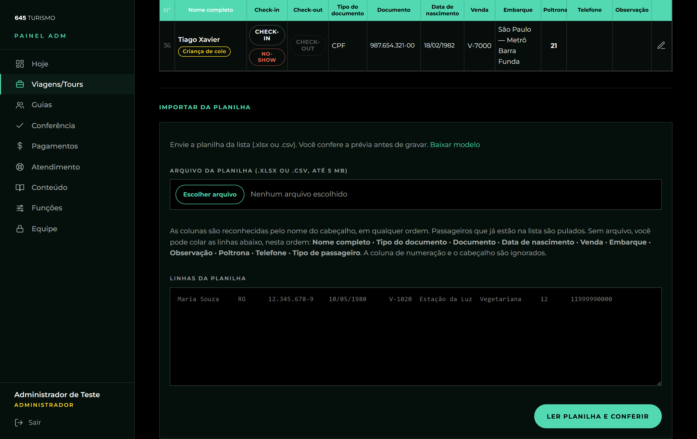
Importar da planilha
Envie a planilha (até 5 MB) ou cole as linhas. Use Baixar modelo se precisar.
Clique em Ler planilha e conferir. As colunas são reconhecidas pelo nome do cabeçalho, em qualquer ordem.
Confira a prévia: quantos vão entrar, quantos já estão na lista (pulados) e as linhas ignoradas.
Clique em Importar. Nada é gravado antes disso.
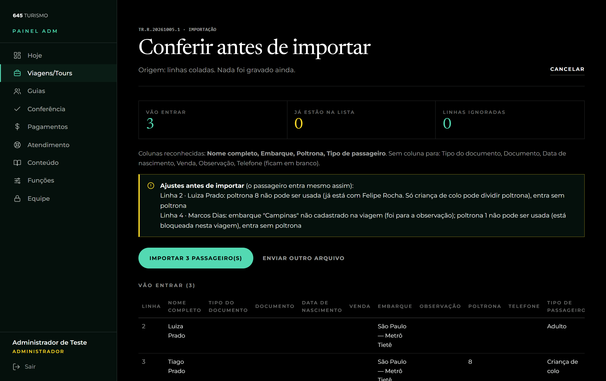
Prévia com ajustes antes de importar
A prévia avisa e ajusta o que não segue as regras, sem perder o passageiro:
Embarque fora da viagem fica em branco e o texto original vai para a observação.
Poltrona bloqueada, inexistente ou ocupada fica em branco para você escolher outra.
Tipo de passageiro é reconhecido por nomes como Adulto, Criança, Criança de colo, ADT, CHD e INF.
Manual do ADM
CAPÍTULO 11Guias: triagem e ficha
Em Guias ficam os cadastros novos para aprovar e o banco de guias, com filtros por função, região e idioma.
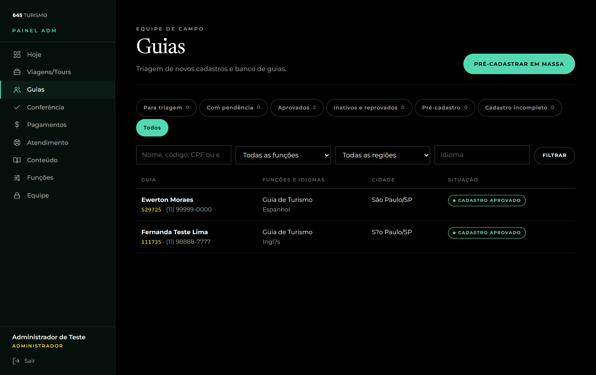
Lista de guias
As abas separam: para triagem, com pendência, aprovados, inativos e reprovados, pré-cadastro, cadastro incompleto e todos.
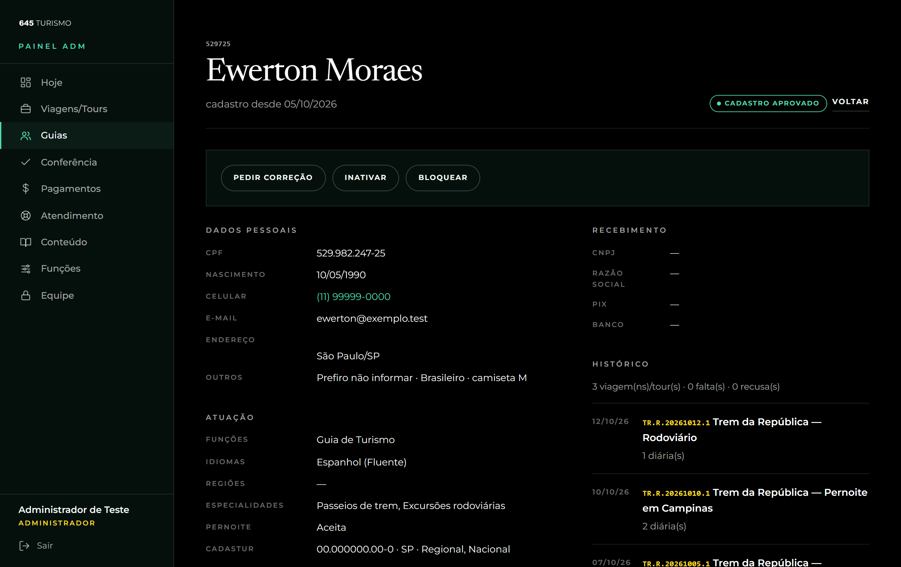
Ficha do guia
Na ficha
Para que serve
Aprovar cadastro
Libera o guia para receber convites; ele é avisado por e-mail
Pedir correção
Volta para o guia com o motivo; ele corrige e reenvia
Reprovar, inativar, bloquear
Encerra ou suspende o acesso (reprovar e bloquear pedem motivo)
Notas internas
Observações que só a equipe vê
Reenviar acesso
Gera nova senha temporária e envia por e-mail
Enviar link de nova senha
Manda um link para o guia criar outra senha
A ficha mostra dados pessoais, atuação (funções, idiomas, Cadastur), recebimento (CNPJ ou "não emite NF" e PIX) e o histórico de trabalhos.
Manual do ADM
CAPÍTULO 12Pré-cadastro em massa
Para cadastrar vários guias de uma vez. Cada um recebe por e-mail uma senha temporária, troca no primeiro acesso e completa o cadastro.
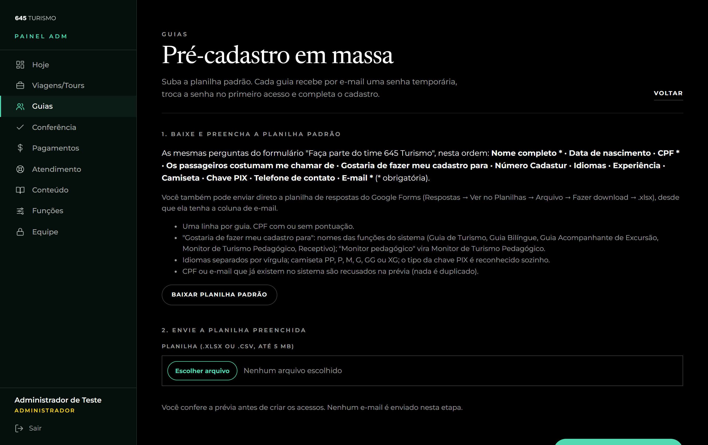
Pré-cadastro em massa
Em Guias, clique em Pré-cadastrar em massa e depois em Baixar planilha padrão.
Preencha uma linha por guia: Nome completo, CPF e E-mail (obrigatórios), Celular, Data de nascimento e Funções.
Envie a planilha (.xlsx ou .csv) e clique em Ler planilha e conferir.
Confira a prévia e clique em Criar e enviar.
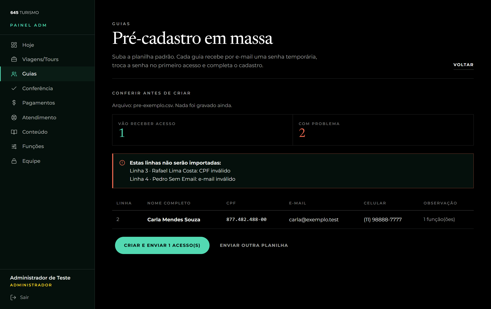
Prévia: linhas aceitas e recusadas
A prévia recusa CPF ou e-mail inválido, repetido na planilha ou já cadastrado. Nada é duplicado.
A senha temporária vale 7 dias. Se vencer, use Reenviar acesso na ficha do guia.
O guia aparece na aba Pré-cadastro até completar os dados; depois vai para Para triagem.
Manual do ADM
CAPÍTULO 13Conferência
Depois do trabalho, os guias enviam o relatório da viagem e a nota fiscal. A conferência libera o pagamento.
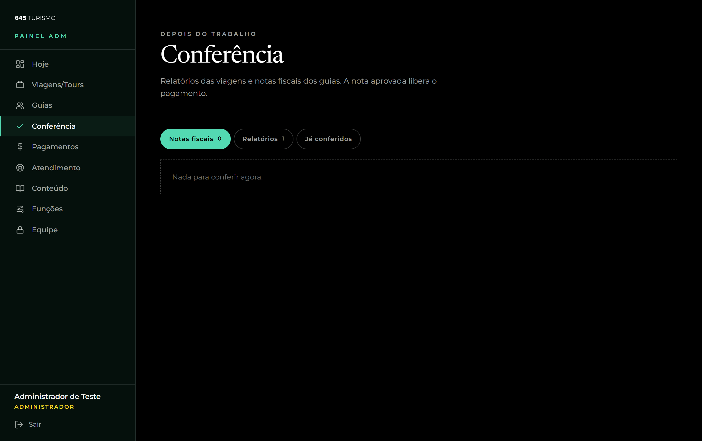
Conferência
Abas Notas fiscais, Relatórios e Já conferidos.
Abra a nota, confira número, valor e dados da empresa, e aprove ou devolva com o motivo. O guia recebe e-mail nos dois casos.
Nota aprovada vai para Pagamentos. Guias que não emitem nota vão direto para lá depois do relatório.
Manual do ADM
CAPÍTULO 14Pagamentos
Lista o que está pronto para pagar, por guia e viagem, com o PIX e os dados bancários.
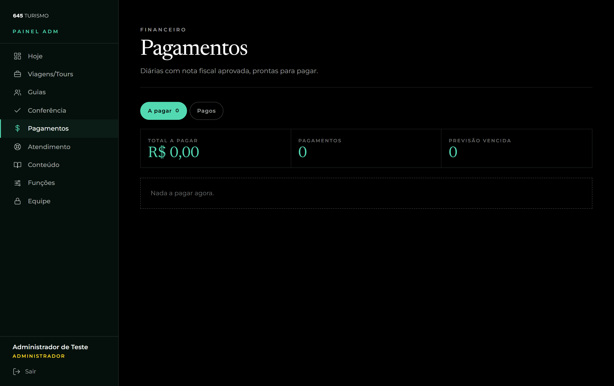
Pagamentos
Na aba A pagar, veja total, quantidade e previsões vencidas.
Faça o PIX pelo banco e registre o pagamento informando a data e anexando o comprovante.
O guia vê o pagamento e o comprovante em Ganhos.
Use Exportar CSV para levar a lista ao banco ou à contabilidade. A aba Pagos guarda o histórico.
Manual do ADM
CAPÍTULO 15Atendimento e recados
Os chamados abertos pelos guias chegam aqui, com os urgentes primeiro.
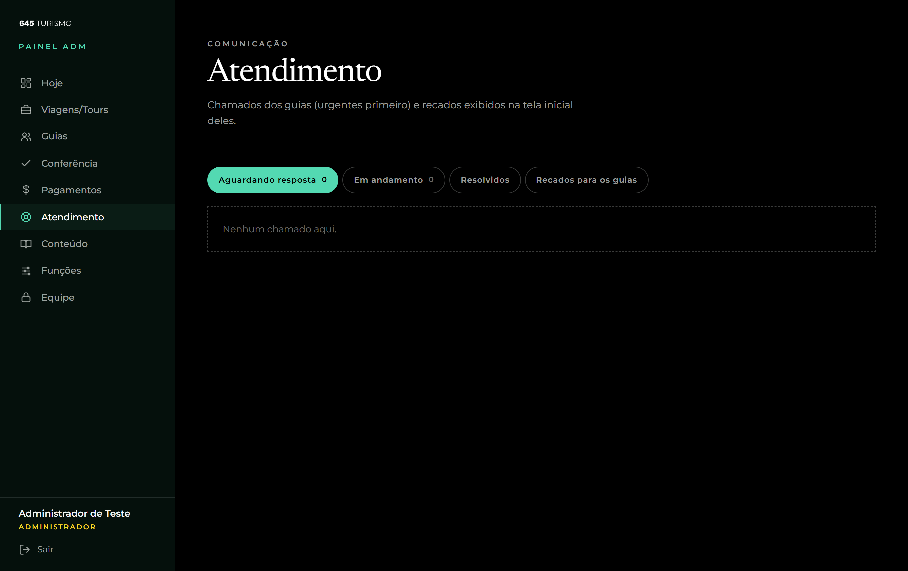
Atendimento
Abas: aguardando resposta, em andamento, resolvidos e recados para os guias.
Abra o chamado, responda e marque a situação. O guia vê a resposta em "Para resolver".
Recados: avisos que aparecem na tela Hoje de todos os guias (ex.: uniforme novo).
Manual do ADM
CAPÍTULO 16Conteúdo, Funções e Equipe
Conteúdo
O que os guias encontram em Ajuda: perguntas frequentes, guia prático, vídeos (links do YouTube ou Vimeo) e contatos da equipe. Use Publicar, Editar, Esconder e Apagar.
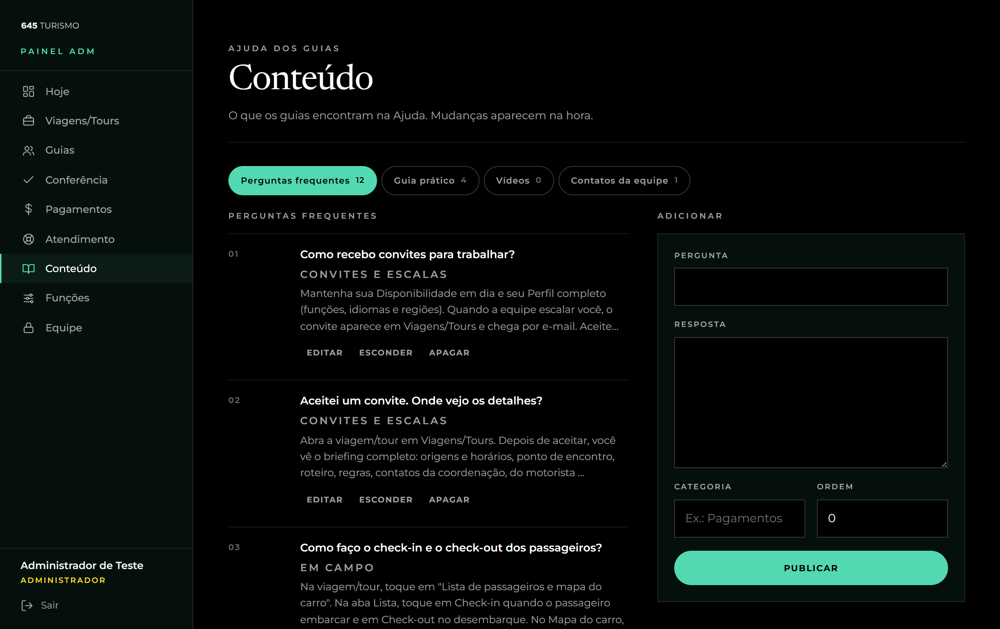
Conteúdo da Ajuda
Manual do ADM
Funções
As funções que os guias exercem (Guia de Turismo, Guia Bilíngue, Receptivo...). Elas aparecem no cadastro do guia e nas vagas. Marque "Exige Cadastur" para tornar o Cadastur obrigatório e "Exige idioma estrangeiro" quando for o caso.
Equipe (só Administrador)
Quem acessa o Painel ADM e com que perfil. Informe nome, e-mail e perfil e clique em Enviar convite: a pessoa recebe um link (válido por 3 dias) para criar a senha.
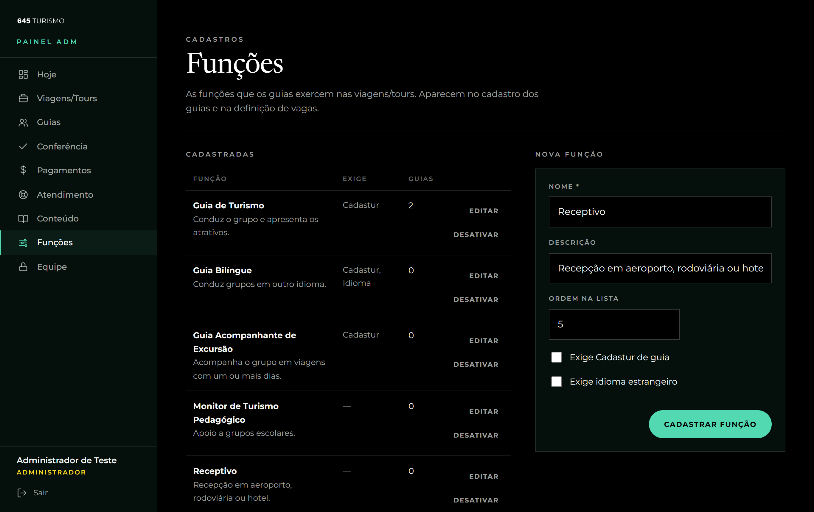
Funções
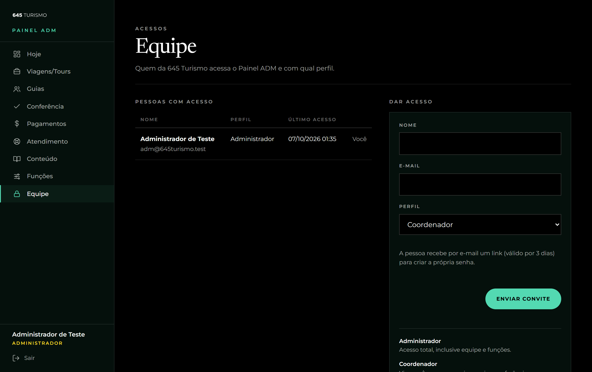
Equipe
Depois de uma nova versão do sistemaAs atualizações do banco de dados são aplicadas automaticamente na publicação. Não é preciso fazer nada.